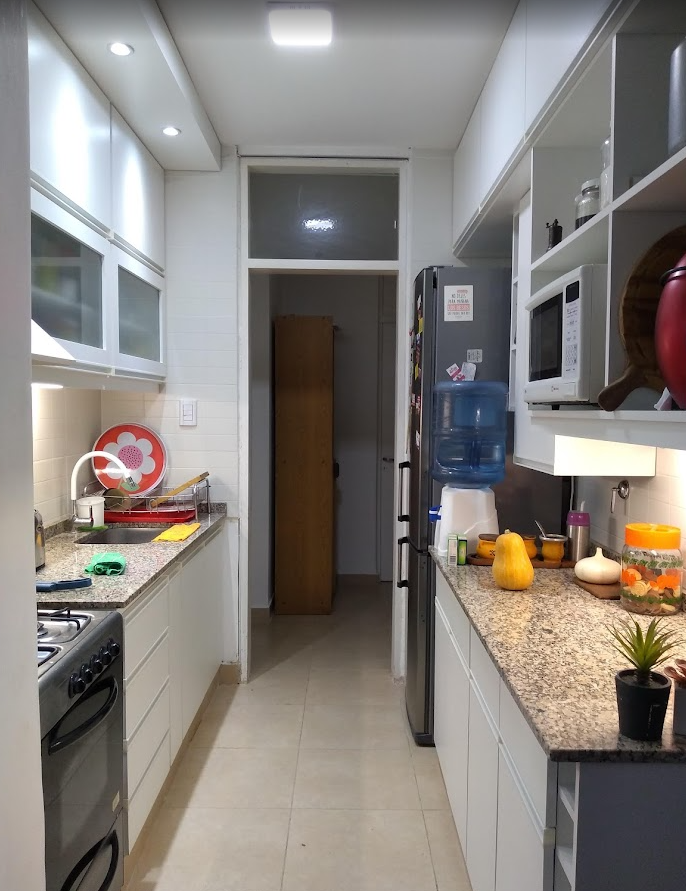
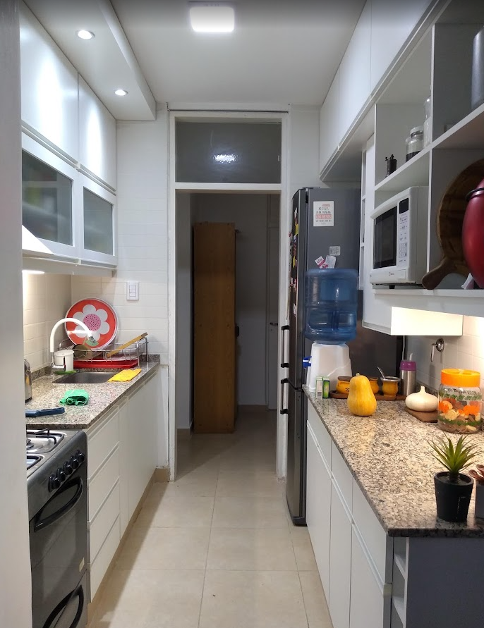

Hola, soy Ana Laura
Tengo 34 años y soy Arquitecta. Me recibi en diciembre de 2018 en la FACULTAD DE ARQUITECTURA, URBANISMO Y DISEÑO de la Universidad Nacional de San Juan. Mi pasión es crear espacios que no solo sean funcionales y estéticos, sino que también generen bienestar.
Cuando no estoy diseñando, estoy explorando la naturaleza, practicando yoga o en el gimnasio. Esta conexión con el movimiento y la vida activa la llevo a cada uno de mis proyectos. Amo los animales y estoy empezando a explorar la programación para fusionar tecnología y arquitectura.


 
